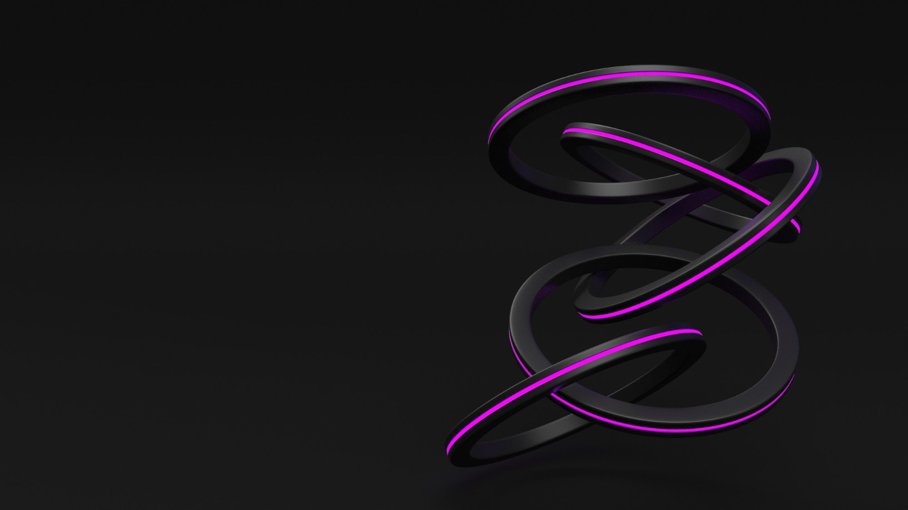
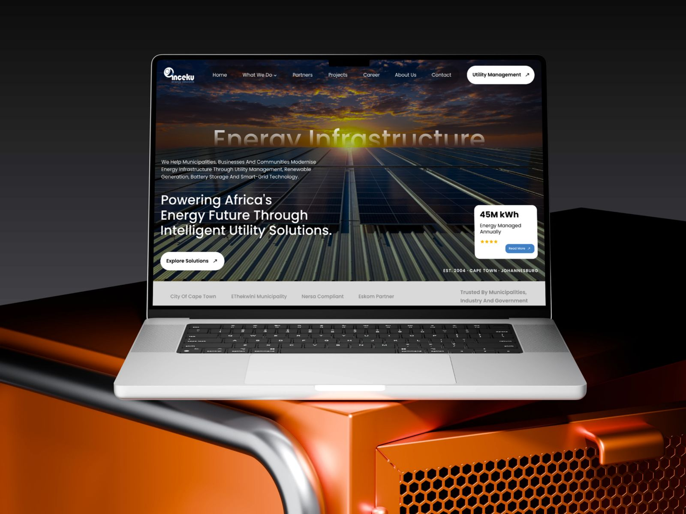
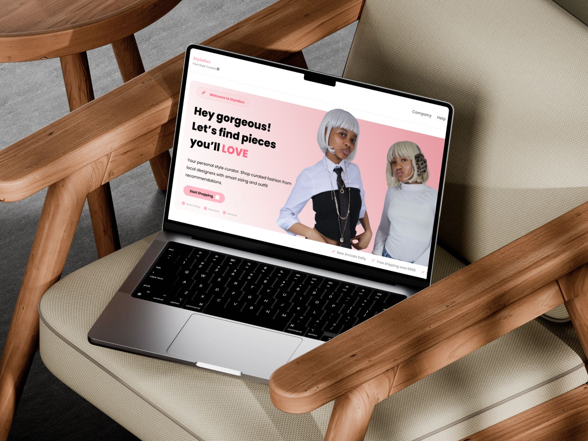
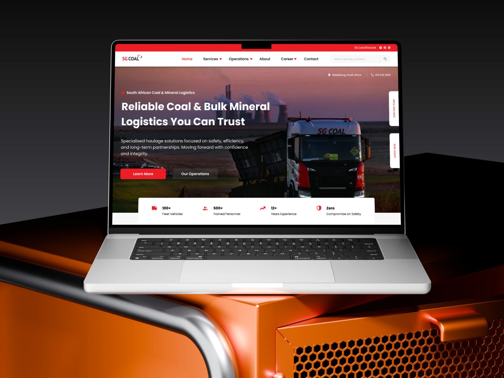

Product Designer & AI Experience Designer
I design complex products
into experiences people understand.
01 — Selected Work
Solving complex problems across
enterprise software & AI.
Every project begins with a business challenge — not a screen.







Scroll sideways to explore more mockups
02 — Design Philosophy
Designing systems that hold up under real use.
Good design isn't the interface — it's everything that has to be true for the interface to work.
Before I draw a screen, I want to understand the decision points, the failure states, and the constraints the business is actually operating under — whether that's a WiFi dashboard, a fintech onboarding flow, or a WhatsApp-based verification system. The medium changes. The discipline doesn't.
I design for the South African reality — multilingual, low-bandwidth, income-irregular — instead of importing frameworks built for someone else's market.
Consent, data handling, and compliance aren't legal afterthoughts — POPIA and governance thinking get designed in from the first flow, not bolted on before launch.
Rejection loops, edge cases, admin overrides — if a system only works in the happy-path demo, it isn't finished.
Whether it's a service blueprint, a design system, or a conversational AI flow, I'd rather take one problem all the way to governance-grade than ship ten shallow screens.
03 — The Problems I Solve
Most products don't have
interface problems. They have
decision problems.
I help organisations solve challenges such as:
- 01Making AI decisions understandable — Designing confidence, transparency and human oversight into AI-powered experiences.
- 02Simplifying complex operational workflows — Transforming fragmented enterprise processes into intuitive user journeys.
- 03Reducing cognitive load — Helping users complete critical tasks with confidence — even in high-pressure environments.
- 04Building scalable design systems — Creating reusable foundations that enable product teams to move faster while maintaining consistency.
- 05Aligning business and user needs — Turning stakeholder complexity into products that achieve measurable outcomes.
04 — Expertise
What I bring
to product teams
05 — How I Work
Good products are built
through better decisions.
My process changes with the product, but the principles stay consistent. I begin by understanding how the business operates, where users struggle, and which decisions have the greatest impact. From there I map workflows, identify friction, explore multiple directions, prototype rapidly, and validate with stakeholders before refining the experience into scalable design systems — treating design as a continuous process of reducing uncertainty, not a sequence of deliverables.
How the business operates, where users struggle, and which decisions matter most.
Workflows and friction points, then multiple solution directions — not just one.
Rapid, interactive prototypes tested with stakeholders before development begins.
Refining the experience into scalable, reusable design systems.
06 — About
Not just interfaces. Operating models.
I'm Sphamandla Xaba, a Product Designer and AI Experience Designer based in Gauteng, South Africa.
I design for the systems businesses actually run on — enterprise workflows, AI-powered products, and operational software that has to work when the environment doesn't cooperate.
Field conditions. Offline states. Compliance requirements. The trust between a driver and a dispatcher who's never met them. That's where good design earns its place.
Before pixels, I ask what the system needs to be true. That question runs through every project here — from enterprise verification platforms with governance frameworks to field-operations software designed around the reality of a driver's working day, audit trail included.
I work well inside ambiguity: taking a vague business problem, mapping the operational reality, and turning it into something a team can ship, use, and defend. Not just a set of screens that looks finished.
Download Profile07 — Contact
Open to new projects · Remote / Worldwide
Let's build better products.
Whether you're modernising enterprise software, exploring AI-powered experiences, or improving operational workflows, I'd love to help design products that are both intelligent and genuinely usable. Let's talk.